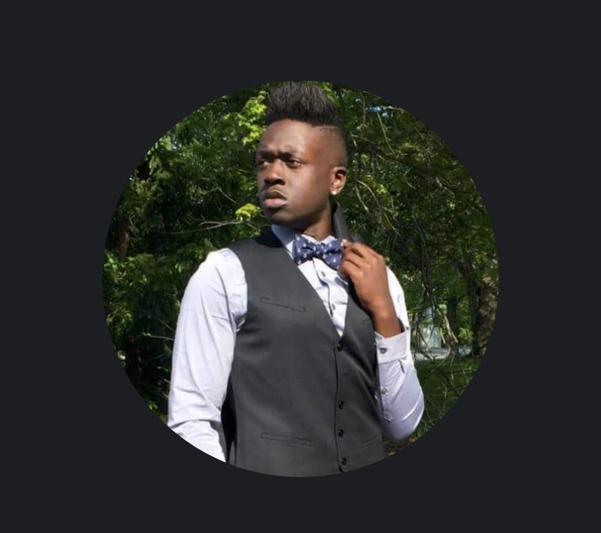

About Me
My path into computer science has been non-traditional, beginning with a foundation in Information Systems Management before transitioning into a Master’s program in Computer Science. Through my coursework, I’ve been developing skills in software engineering, web development, systems, Linux environments, and technical problem-solving. Outside academics, I competed as a Division I Track & Field athlete, which helped shape my discipline, consistency, teamwork, and leadership skills. I’m especially interested in software engineering, elements of cybersecurity, full-stack development, and understanding how technical systems solve real-world business needs and operational challenges.
Beyond Technology
Music & DJing
I enjoy mixing music and creating original transitions and sound combinations for personal enjoyment and creative expression.
Drawing
Drawing has always been a creative outlet for me and a way to explore visual ideas and design concepts.
Northeast Roots
I’ve spent my life in the Northeastern United States, which has shaped both my personal experiences and academic journey.
Cooking
I enjoy cooking and experimenting with different meals as a way to relax, learn, and be creative outside of academics.